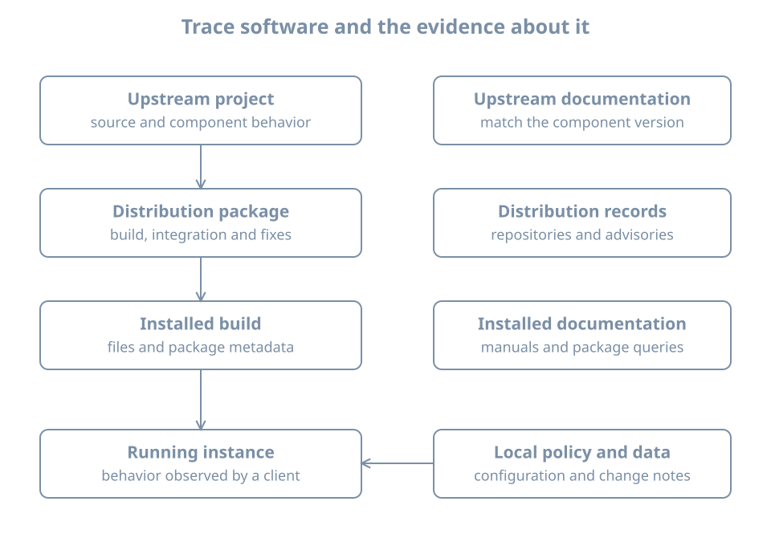

Distributions, Releases and Documentation
Two machines both run Linux, yet a guide’s package name exists on only one of them. A configuration option appears in an upstream manual but fails validation on the installed server. A security scanner flags an old-looking version even though the distribution reports that its package contains the fix.
These are problems of identity and responsibility. The kernel is only one part of the installed system. To choose instructions or plan a change, identify the distribution release, package source, installed build and party responsible for maintaining it.
This chapter teaches that identification process. Its package examples use the Ubuntu/Debian APT and dpkg toolchain. They inspect local metadata and do not install software or add repositories. You can read them before creating the reference VM; use that VM for the matching commands rather than assuming your host has the same package tools.
A distribution is an integration and maintenance boundary
A distribution combines the kernel, libraries, system tools and applications into an installable system. Its maintainers decide how software is built, which defaults are supplied, how dependencies fit together, how updates are delivered and which releases remain supported.
The upstream project develops a component such as a web server. The distribution package integrates a particular build into an operating-system release. The installed system adds local configuration and workload data. A cloud image or appliance vendor may add another layer. Each layer can make decisions that affect your machine.

Suppose an upstream guide places a server’s example configuration in /usr/local/etc, while your package reads /etc/example. Neither path should be chosen by familiarity alone. Inspect the installed package and service. Your responsibility is to find the configuration actually used by this instance.
The same distinction applies to service names, optional modules and startup defaults. A distribution may split software into several packages or ship a separate integration unit. Knowing the upstream product name is useful; it is not a complete installation inventory.
Release models create different change schedules
A release is a named, coordinated version of a distribution. A fixed-release model groups substantial changes into releases, with maintenance updates during each release’s supported life. A rolling-release model delivers an evolving collection of packages without requiring the same kind of major-version transition.
Neither model eliminates operational work. Fixed releases require planned release upgrades and continued maintenance between them. Rolling systems require regular attention to package transitions and compatibility. Both need backups, recovery access and testing appropriate to the workload.
Long-term support, or LTS, describes a maintenance commitment for a particular product and scope. It does not mean every program installed on the machine receives identical coverage. A separately installed vendor application, container image or manually built tool can have its own lifecycle.
Ubuntu’s official release-cycle page distinguishes LTS, interim releases and support offerings. The book uses Ubuntu 26.04 LTS as its reference release. For deployment decisions, check the current coverage of the exact release and packages rather than copying a date from a tutorial. Record the check date alongside the result, since an operational plan must remain meaningful after time passes.
A practical support record includes:
| Field | Why it matters |
|---|---|
| Distribution and release | Identifies the base maintenance stream |
| Architecture | Determines available builds and installation media |
| Package and source | Identifies who supplied the software |
| Coverage and conditions | Establishes which updates are actually available |
| Maintenance deadline | Gives a date by which action must be planned |
| Application compatibility | Identifies what needs testing before an upgrade |
| Recovery route | Explains how service will be restored if a change fails |
“Supported operating system” is a useful starting statement, but the record must become specific enough to guide action. Conversely, an unsupported component does not become supported merely because it runs on an LTS host.
Worked example: separate distribution identity from kernel identity
On the machine being investigated, run:
cat /etc/os-release
uname -r
uname -m/etc/os-release describes the operating-system identity. uname -r reports the running kernel release, and uname -m reports the machine architecture as exposed to the running environment.
Fields you may see include ID, VERSION_ID, PRETTY_NAME and ID_LIKE. Use ID and VERSION_ID to record the distribution and version; PRETTY_NAME is intended for display. ID_LIKE can suggest relationships but is not a guarantee that instructions for another distribution are compatible. The os-release specification defines these fields and identifies /etc/os-release as the preferred location, with /usr/lib/os-release as fallback.
Do not edit release-identification fields to make an installer accept the host. That changes the reported identity without providing the software compatibility the installer expected.
A container offers an instructive case: its distribution identity can describe the container’s userspace, while uname reports the kernel it shares with the host. A VM normally has its own guest kernel. Two identity commands can therefore report different layers without either being wrong.
Likewise, installing a kernel package does not by itself change the kernel already running. An update inventory and a runtime inventory answer different questions. Later maintenance chapters explain activation and reboot planning; here, preserve both observations rather than forcing them into one “Linux version” field.
Packages, repositories and origins
A package is a managed software artifact with metadata such as name, version, architecture and dependencies. A repository publishes packages and metadata for tools that select and retrieve them. A repository is a software supply relationship, not merely a convenient download address.
On Ubuntu and Debian, dpkg tracks installed Debian packages, while APT uses available-package metadata and dependency rules to plan operations. Ubuntu’s package-management documentation explains the responsibilities and workflows. Other distributions use different tools; the questions about installed versions and origin remain the same.
A mirror provides a delivery location for repository content. Its proximity does not by itself establish trust. Package-management trust involves the authenticated metadata, configured authorities and repository policy. A third-party source can introduce packages and dependency choices outside the base distribution’s maintenance process. Adding one is an administrative decision that needs an owner and removal plan.
This chapter does not ask you to add a repository. Before considering one, ask: What software is missing? Who signs and maintains this source? Which distribution releases and architectures are covered? Which installed packages could it replace? How will updates and retirement work? A copied command containing a signing key and a repository URL does not answer those questions.
Installed version and candidate version
On the reference VM, inspect the APT package itself:
dpkg-query -W -f='${binary:Package}\t${Version}\t${Architecture}\n' apt
apt-cache policy aptThe first command asks the installed-package database for selected fields. Single quotes keep the shell from expanding the field expressions before dpkg-query reads them. The dpkg-query manual defines the query format.
apt-cache policy distinguishes the installed version from the candidate selected using current local metadata and policy. Its version table helps identify the available origins and priorities. The candidate is not necessarily a newer version and is not necessarily the highest version published anywhere. Repository selection and policy constrain what this host considers.
The apt-cache manual also explains an important limitation: metadata is cached locally and can be stale. These inspection commands do not refresh it. If the cache is old or absent, label that limitation in the inventory rather than concluding that no updates exist.
For a beginner’s observation sheet, record the installed value, candidate value and listed source. If they differ, explain the difference before proposing an upgrade. If the candidate is absent, investigate metadata and source configuration; do not immediately substitute a package from an unrelated release.
Which package owns a file?
A pathname can be supplied by a package, a local installation, an application at runtime or a configuration generator. On the reference VM, inspect a known packaged file:
dpkg-query -S /usr/bin/aptAn expected result is a package ownership record naming apt. This establishes the package database’s ownership claim for that path. It does not verify that the current file’s contents are unchanged, and it does not identify every possible manually installed program on the machine.
This distinction is useful when a guide says to overwrite an executable or edit a vendor-supplied file. First identify ownership. A local replacement may be overwritten by an upgrade, while a package-managed file may have a supported override mechanism that survives updates. Later chapters cover verification and configuration-file handling in detail.
Versions are evidence, not complete security verdicts
A distribution can apply a selected correction to an older software series without adopting all features of a newer upstream release. This is called backporting. Consequently, comparing only the upstream version prefix can misclassify a distribution package. Debian’s security FAQ explains why its security maintenance uses backported fixes and why version-only checks can be misleading.
The opposite shortcut is also wrong: do not assume that an old-looking package is patched merely because backports exist. Identify the advisory, distribution release and exact package revision. Then compare the installed package with the advisory’s affected and fixed builds.
For an Ubuntu-managed component, Ubuntu Security Notices are an authoritative place to begin that lookup. A component installed from another vendor needs that vendor’s advisory path. Container images require attention to the packages inside the image as well as the host.
A useful security investigation record is:
Reported issue:
Affected component and source:
Distribution release and architecture:
Installed package revision:
Applicable vendor advisory:
Fixed revision or other required action:
Runtime activation needed:
Verification result and time:This record separates discovery, installation and activation. Even after a corrected library is installed, a long-running process may still use previously mapped code until it is restarted. The appropriate action depends on the component; checking only the package database can leave the runtime question unanswered.
Find documentation that belongs to the installed system
Use several kinds of evidence together:
| Source | Best use | Limitation |
|---|---|---|
Installed manual and --help |
Syntax and features shipped with installed tools | Manuals may be absent or incomplete |
| Distribution documentation | Packaging, integration and supported workflows | Check release applicability |
| Upstream manual for the matching version | Component behavior and configuration semantics | Distribution defaults or patches can differ |
| Release notes and advisories | Changes, known issues and required actions | Match the affected product and build |
| Local change records | What administrators intentionally changed | Records can be incomplete or stale |
For example, man 1 ps asks for the user-command manual named ps. Manual section numbers distinguish categories: section 1 commonly describes commands, section 5 file formats, and section 8 administration tools. man -k searches manual descriptions, provided a suitable local index is available. The man manual documents lookup and section selection.
On the reference VM, try:
man 1 ps
man 5 os-release
man 8 apt-cachePress q to leave the usual manual pager. If man or the pages are absent on a minimal image, use the distribution’s versioned manual site and record that you used an external source. Missing local documentation is not a reason to run an unrelated installer from a search result.
Upstream pages marked “latest” can describe options added after your installed release. Before adopting an unfamiliar option, inspect the installed version, its local manual and the option’s version notes. A failed option does not necessarily indicate a damaged installation; it may be a feature mismatch.
Worked investigation: a guide does not match the machine
Suppose a guide instructs you to enable a new configuration directive, but the service’s validator reports “unknown directive.” A productive investigation proceeds as follows:
- Identify the actual executable and service instance that produced the error.
- Record its package, installed revision and source.
- Check the installed manual for the directive and its valid location.
- Check the guide’s target version and distribution assumptions.
- Decide whether an older supported equivalent meets the requirement, or whether a planned upgrade is necessary.
Do not remove validation just to make startup proceed. Do not install a foreign release’s library to satisfy one command without evaluating the rest of the system. The service may depend on an integrated collection of libraries and plugins. A narrow documentation mismatch can become a broad recovery incident if treated as a package-download problem.
This is also where local records matter. If the executable came from /usr/local and the unit was written locally, distribution instructions may be only part of the answer. Ownership must be traced to the actual installation path.
Practice: write a documentation and support card
For your lab VM, record distribution identity, running kernel, architecture, the installed APT package version and its candidate. Add the source of your metadata and whether its freshness is known. Then locate one installed manual, one relevant distribution page and one upstream reference for a component you inspected.
Write one sentence explaining which source answers each question:
- Where does this distribution put the component’s configuration?
- Does this installed version implement a particular option?
- Which package revision fixes a reported vulnerability?
- What local change was made before the failure?
Finally, choose a maintenance deadline from the official lifecycle information applicable to the reference installation and record its scope and your access date. Do not silently include third-party software under that deadline.
Success means another reader could identify your environment and find the same class of documentation without guessing from a screenshot or a marketing name. Keep machine-specific values out of the book itself; they belong in your lab notes.
Recall card
- Distribution identity, running kernel and installed package versions describe different layers.
- Support belongs to a defined product, release, source and scope.
- Repository configuration establishes a software supply relationship.
- Installed and candidate versions are different observations; cached metadata has an age.
- Backported fixes require package-specific advisory checks, not version-prefix guesses.
- Match documentation to the installed component, then verify local behavior.